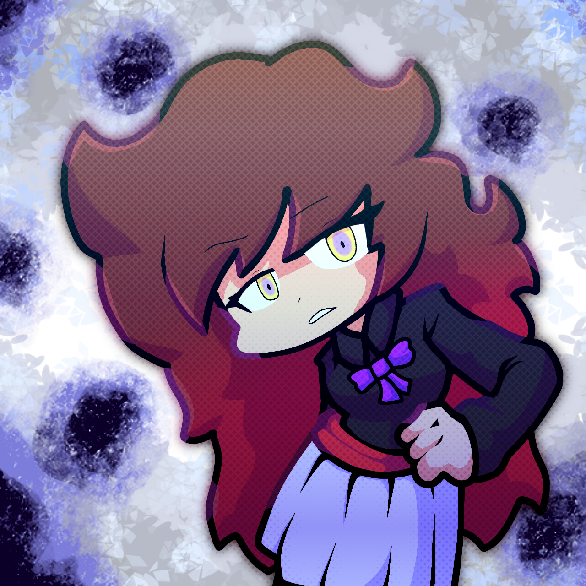
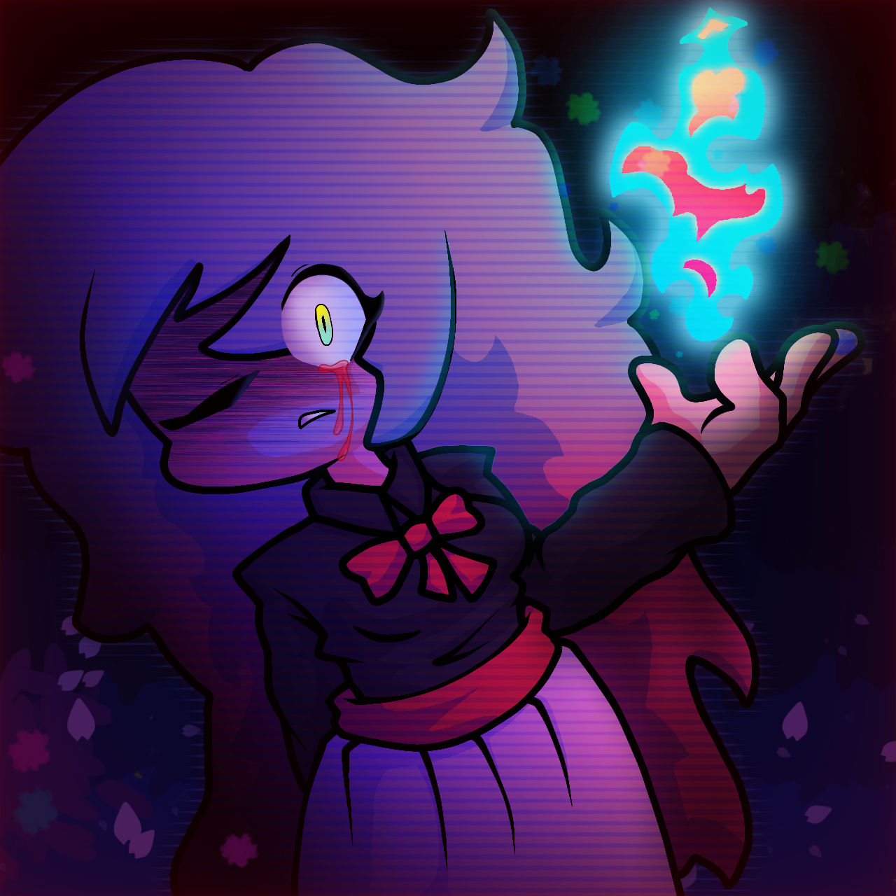

Subject index
Personajes y archivos
Orden oficial de NRX : Reality Break. La información no confirmada se marca como expediente en desarrollo.

Temporada 1KamerFigura principal de la Temporada 1 y primer punto de entrada a la ruptura de realidades de NRX.
 01
01

Temporada 2CamilaPersonaje central de la Temporada 2, ligada a una atmósfera oceánica, inmensa y desconocida.
 02
02

Temporada 3MarÃa y EstefanÃaDúo central de la Temporada 3; dos presencias conectadas por una misma historia y una señal que se desvanece.


03
Rival oficialAuroraRival relacionada con la luz, el espectáculo, las apariencias falsas y la reescritura.
04

Rival oficialKargemQuinto archivo oficial de NRX. Su información pública se ampliará conforme avance el desarrollo.
05

Rival oficialTsuranElegante anfitriona de Opress: educada, orgullosa y amenazante, con motivos inspirados en el pavo real.
06

Rival oficialSelallaAnomalÃa viva dentro del sistema: tierna y contenida por fuera, inestable y peligrosa en su forma BLOSSOM.
07

Rival oficialZyrax.ZRival cuyo enfrentamiento invade el escritorio mediante varias ventanas visibles y señales de presagio.
08

Rival oficialSelverriaNoveno archivo oficial de NRX. Su ficha está lista para incorporar información confirmada.
09

Archivo especialREYKAObservadora de NRX que aparece antes del juego principal mediante REYKA.chr y vigila los errores ocultos.
10
Archivo de desarrollo
Contenido descartado
Versiones históricas no canónicas conservadas con sus videos, canciones, diseños, sprites y motivos del descarte.
RIVAL 01 // SCRAPPED
Kamer — Naturalis Melodies
Pre-demo, demo pública, Natural, Ecosystem, Permafrost, diálogos, sprites, videos y conceptos históricos.
RIVAL 02 // SCRAPPEDCamila — Deleted Files
The Depths, City Goddess, Deleted Files, instrumentales, GIFs, diseños y efectos sincronizados.
RIVAL 03 // SCRAPPEDMarÃa y EstefanÃa
Banish Him, Exhasustened, Harverserts, diseños antiguos, sprites, escenarios y registros interactivos.
RIVAL 04 // SCRAPPEDAurora — Archivo histórico
Arsenal, Desafiant, Farmeando, Aura, Stalker, Starbucks, portadas y diseños antiguos.